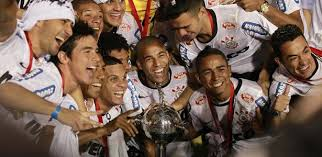

Em 2012, o Corinthians viveu o momento mais glorioso de sua história ao conquistar, de forma invicta, a tão sonhada Copa Libertadores da América. Sob o comando do técnico Tite, o time paulista mostrou um futebol eficiente, sólido e extremamente competitivo, superando adversários tradicionais e consagrando-se campeão continental pela primeira vez.
Desde a fase de grupos até a grande final, o Corinthians manteve uma campanha impecável. Com uma defesa quase intransponível liderada por Chicão e Castán, e um meio-campo comandado por Paulinho e Ralf, o time se destacou pela consistência e pela força coletiva. O jovem Romarinho se tornou símbolo da campanha com gols decisivos, enquanto Emerson Sheik brilhou intensamente na final contra o Boca Juniors.
A conquista foi selada em 4 de julho de 2012, no Estádio do Pacaembu, com uma vitória por 2 a 0 sobre o tradicional Boca Juniors, da Argentina. Com dois gols de Emerson Sheik, o Corinthians encerrou o tabu e levantou a taça de forma invicta, um feito raríssimo na competição sul-americana.
Mais do que um título, a Libertadores de 2012 representou a afirmação do Corinthians como potência continental. A campanha exemplar, sem derrotas, reforçou a identidade do clube e emocionou milhões de torcedores que por décadas esperaram esse momento. A união entre time, torcida e comissão técnica foi determinante para o sucesso histórico.
A festa no Pacaembu e nas ruas de São Paulo entrou para a história do futebol brasileiro. O título da Libertadores de 2012 é, até hoje, uma das conquistas mais emblemáticas do Corinthians e marcou para sempre o legado da geração vitoriosa liderada por Tite e seus comandados.
